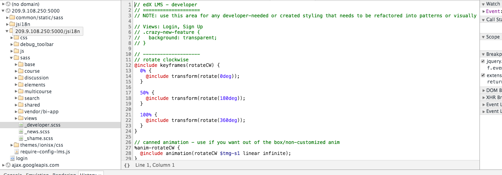

上周末去了趟内蒙古师范大学，他们在Open edX前端所做的工作令人震惊，不仅效果惊人，让你看不出这是一个edx系统，而且采用的方法也十分聪明，完全可以去今年在斯坦福举办的Open edX第三届会议上与大家分享。
这段时间我在考虑Open edX的前端相关的工作流和最佳实践，整理出来与大家分享和讨论
历史回顾
关于Open edX前端开发，此前主要有两类做法
- 直接侵入修改scss和template
- 采用theme机制，例子有：
- 斯坦福大学贡献的Stanford-Online/edx-theme
- IONISx公司贡献的IONISx/edx-theme
- 来自法国的openfun/edx-theme
估计以上的这些，对新手而言，看的云里雾里了。看不懂历史是好事呢，说明没有历史负担。
在edx发布了dogwood版本之后，我们就不要这么折腾啦。
新版本前端定制相关的工作，有内置的主题机制。只要保证主题包的目录结构和静态文件目录结构相同，主题包下的同名文件就会覆盖原始文件。这样修改前端界面就是全面且非侵入式的了。
如果你有修改theme的经验，那么对当前的theme机制应该手到擒来，修改过程几乎一样，当然命名规则有些调整，具体参考Comprehensive Theming
并且theme同时支持lms和cms！
此外更激动人心的一个项目是ux-pattern-library，使用方法看这里:Use and Deployment
我们带着任务来学习edx的前端机制，我关注的问题主要包括：
- edx是如何管理/编译静态文件的
- 如何使edx前端能自适应
- 是否可以直接采用css覆盖的方式来定制页面，这样一来是否就不需要编译
- 如果采用theme机制修改scss文件，代码如何迅速生效而不是每次paver update_assets
- 如何方便地调试，最好是定位到影响页面的scss元素
探索一番
我们先进入到项目目录里随便瞧瞧，探索一番
这篇文章写作动机主要针对edx的排版，所以暂时不打算讨论js相关的内容
edx使用sass来写CSS，关于sass是什么,可以看这里SASS用法指南
这些文件位于目录：edx-platform/lms/static/sass/
其中很多文件有ltr后缀，意思是left-to-right，为left-to-right排版的语言准备的，汉语和英语都是ltr风格的语言，阿拉伯语是rtl风格的语言
我们在scss文件里经常看到@import 'bourbon/bourbon';,bourbon位于edx-platform/common/static/sass
从lms-main-rtl.scss可以看到THEME-OVERRIDE是插入式的而不是覆盖式的
// This comment is used by preprocess_assets.py to include resources from a
// theme, for old-style deprecated theming.
//<THEME-OVERRIDE>
关于主题的实现暂时不作探索。
update_assets
我对edx中静态文件最初的认识，来自paver update_assets lms --settings=aws命令，这条命令会做许多工作，诸如编译sass/coffee，替换主题，收集静态文件等。
我们来看看这块的机制
update_assets命令来自edx-platform/pavelib/assets.py
通过探索，我们可以回答问题5了，通过传递debug参数给update_assets命令，compile_sass将--sourcemap传给sass命令，这样在编译scss的时候同时生成css.map文件，这个文件就是为调试scss而生的
我们知道在浏览器调试面板中可以直接调试css文件，可css文件是由scss生成的，就是说影响最终界面的是css文件，而我们编写的确实scss，那么如何弥合这两者，map文件就是解决方案，在浏览器里我们可以直接看到影响布局的scss代码！想想就让人激动呀
如何使用map文件，参考Using source maps with Sass 3.3
use map to debug scss
首先把调试环境跑起来：
sudo /edx/bin/supervisorctl stop edxapp:
sudo /edx/bin/python.edxapp /edx/app/edxapp/edx-platform/manage.py lms runserver 0.0.0.0:5000 --settings devstack
然后生成css.map文件
sudo -H -u edxapp bash
source /edx/app/edxapp/edxapp_env
cd /edx/app/edxapp/edx-platform
paver update_assets lms --debug --settings=aws
cypress和birch都有css.map文件，而dogwood没有了，应该是bug
---2016.02.01
今天发现在dogwood中，paver update_assets lms --settings=aws编译是会生成css.map文件的，之前可能由于--settings=devstack的缘故
之后打开浏览器，就可以开始调试啦
我们可以一边调试一边开发，只需要实时观测scss文件的变化，每当变化自动编译为css
新开一个tmux窗口执行paver update_assets lms --debug --settings=aws --watch
theme机制
我们可以认为theme目录下的主题包下的文件会覆盖同名文件，这样一来我们需要定制前端页面的时候，就容易多啦。在这种机制下，之后主题包完全是插件式的了：）
先来看下主题包的目录结构
my-theme
└── lms
├── static
│ ├── images
│ │ └── logo.png
│ └── sass
│ ├── _overrides.scss
│ ├── lms-main-rtl.scss
│ └── lms-main.scss
└── templates
├── footer.html
└── header.html
具体案例可以参考edx.org
工作流
至此，前端定制的工作流已经很明确了：
- 启动开发环境
- 编译生成css.map文件
- 启动
paver update_assets --watch - 在浏览器调试面板里选择感兴趣的元素，观察影响其排版的scss文件
接下来是在主题包中定制的该文件的过程
- 新建一个主题包，建议目录在edx-platform之外，纳入版本管理系统
- 按照目标scss文件所在目录，在主题包中构建相应目录，在其中创建同名scss文件，写定制的排版规则
paver watch会为你自动编译变更，所以直接到浏览器里去调试就行啦
工作流闭环完成
至此，以上我感兴趣的5个问题，除了自适应，几乎全部解决，自适应的问题是排版本身的问题，和edx的前端机制倒没啥关系了
效果展示


案例
具体定制案例可以参考Stanford-Online/edx-theme
当然这个案例有些过时，原因参考：Comprehensive Theming
附录
探索过程中，顺便发现了跑dev的方法
sed -ibak 's/ENV_ROOT.*/"edx.db",/' /edx/app/edxapp/edx-platform/envs/dev.py
sudo /edx/bin/supervisorctl stop edxapp:
sudo /edx/bin/python.edxapp /edx/app/edxapp/edx-platform/manage.py lms syncdb --settings dev
sudo /edx/bin/python.edxapp /edx/app/edxapp/edx-platform/manage.py lms makemigrations --settings dev
sudo /edx/bin/python.edxapp /edx/app/edxapp/edx-platform/manage.py lms migrate --settings dev
sudo /edx/bin/python.edxapp /edx/app/edxapp/edx-platform/manage.py lms runserver 0.0.0.0:5000 --settings dev
SASS与css模块化
SASS有助于css模块化，我们很多时候并不是从头开始一个项目的。不少人会使用一个 Sass 模板项目，包含了一些变量、mixin 和函数，Open edX就是这样一个项目。
通过模块化，我们大致能猜到登录相关的布局应该通过修改sass/views/_login-register.scss，而通过修改$sm-btn-google: #dd4b39;，我们可以调整google登录按钮的颜色，这样可以让开发更轻松一些。
这样一来css文件被组织得井井有条，像大多的工程项目那样
关于css.map
这是一个辅助调试的文件，把scss编译完的文件（css）关联到原始的scss
sass a.scss:a.css --sourcemap